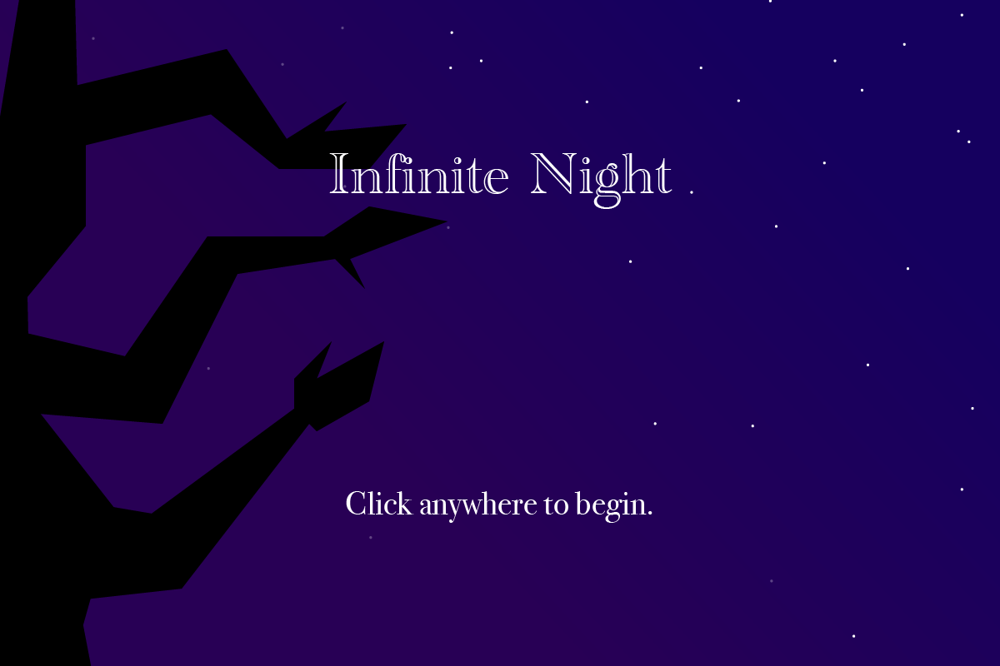
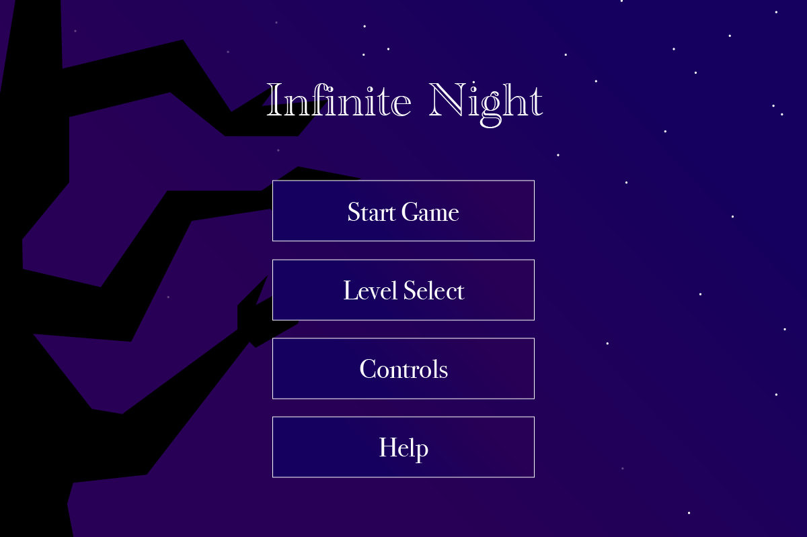
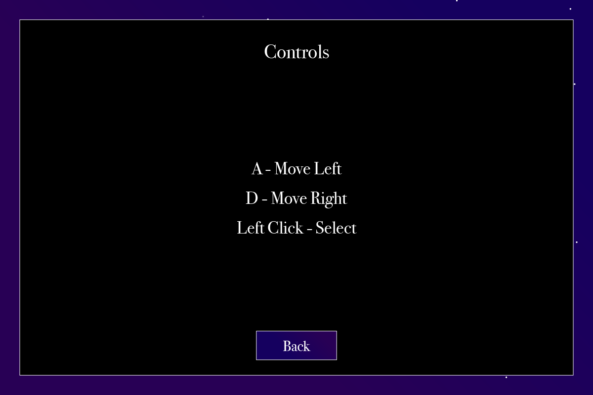
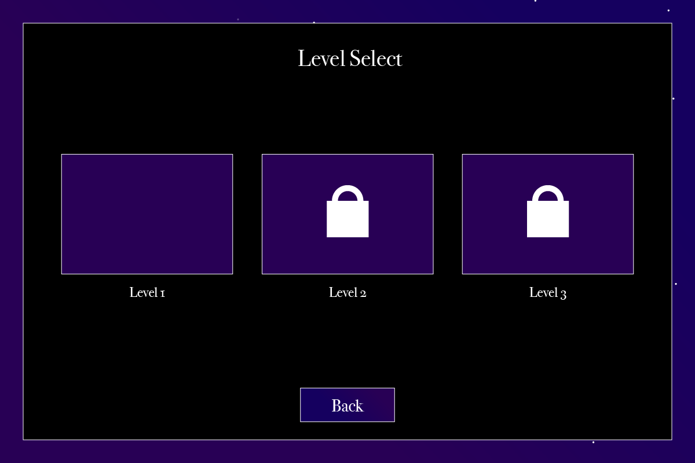
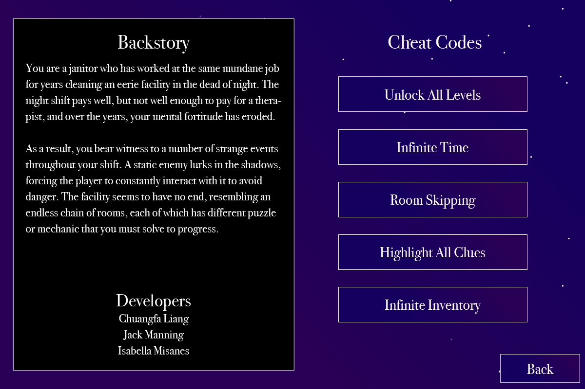
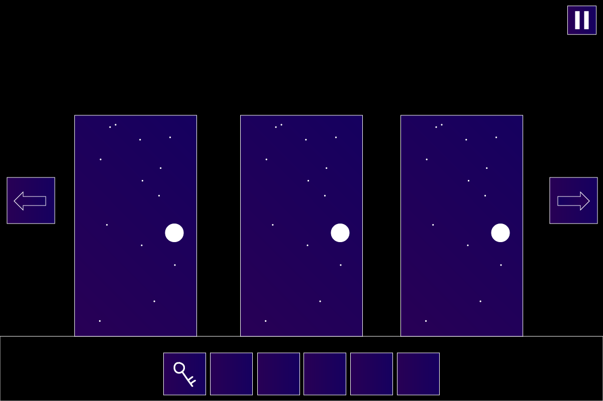

Welcome to Infinite Night, a thrilling action-adventure game that will take you on a journey through a dark and mysterious world.
Firebase URL:https://infinite-night.firebaseapp.com/benchmark1
https://infinite-night.firebaseapp.com/benchmark2
https://infinite-night.firebaseapp.com/benchmark3
https://infinite-night.firebaseapp.com/benchmark4
Infinite Night" is designed to be a unique, 2D first-person point-and-click puzzle game. The game will feature interesting mechanics, challenging puzzles, and an engaging storyline that will keep players entertained and intrigued. The game will utilize a variety of techniques, such as immersive environments, interactive elements, and dynamic changes based on the player's actions.
TECHNOLOGY:First Person Puzzle will be developed for Windows, macOS platforms using a suitable game engine such as Wolfie2D to build first-person point-and-click puzzle games. The rendering technology will be selected based on the engine's capabilities, and all music and sound effects management will be handled using appropriate tools. Artwork will be designed to create an immersive experience and complement the game's unique mechanics and atmosphere.
BACK STORY:The player assumes the role of a janitor who has worked at the same mundane job for years; cleaning an eerie facility in the dead of night. The night shift pays well, but not well enough to pay for a therapist, and over the yars the janitor's mental fortitude has eroded. As a result, the janitor bears whitness to a number of strange events throughout their shift. A static enemy lurks in the shadows, forcing the player to constantly interact with it to avoid danger. The facility seems to have no end, resembling an endless chain of rooms, and each of which has different puzzle or mechanic that the player must solve to progress.
OBJECTIVE:The player's objective is to navigate through the seemingly infinite facility, solve puzzles, and uncover the truth behind the events taking place. By interacting with the environment and overcoming challenges, the player will slowly unravel the story and reveal the identity of the enemy that is hunting them.
GAMEPLAY:The game will be presented in a 2D first-person perspective, with the player able to explore rooms and interact with various objects to solve puzzles. Each room will feature a different mechanic or challenge that must be completed to progress to the next area. The player will need to constantly interact with the static enemy to avoid danger, adding an element of tension and urgency to the gameplay.
The puzzles will vary in difficulty and complexity, requiring the player to think critically and creatively to find solutions. Some puzzles may involve manipulating objects in the environment, while others may require the player to gather information or use their knowledge of the facility to solve problems. As the game progresses, the story will unfold through environmental clues, notes, and other narrative elements.
HOW TO PLAY:This game will be played using a mouse and keyboard. Once started, use the following:
Mouse Movement - Look around Left Mouse Button - Interact with objects Right Mouse Button - Inspect objects ESC - Pause the game and access the game menu
We might think about adding the key W,A,S,D to have more interaction but have not decided yet. W - Move Forward A - Strafe Left S - Move Backward D - Strafe Right
GRAPHIC USER INTERFACE:Splash Screen: The player will see a mysterious logo with the game title "Infinite Night" and a haunting backdrop that hints at the eerie atmosphere of the game. A Start button is displayed for the user to press when they are ready to play.
In-Game Menu: While the game is in progress, a game menu allows the player to select from the following options:
-Start Game button: If the player clicks it, the game restarts.
-Level Select Button: It allows the player to select which level they want to challenge.
-Control: It briefly displays how to play the game.
-Help button: Provides help to the player.
In-Game GUI: Once the game starts, the player's current location, objectives, and inventory are displayed on-screen. A bar indicator shows the player's current inventory, and a progress tracker displays the number of completed rooms and mechanics encountered. Interaction prompts appear when the player is near an object or puzzle that can be interacted with. The static enemy's presence is indicated by visual and audio cues, alerting the player to be cautious.
ARTWORK:Environments: Each room within the facility, with unique designs and puzzles.
Interactive Objects: Various objects that the player can interact with to solve puzzles.
Static Enemy: The mysterious enemy that the player must constantly interact with.
UI Elements: Minimalistic UI elements for displaying important information
SOUND EFFECTS:Ambient Sounds: Background noise and environmental sounds.
Interaction Sounds: Sounds for interacting with objects and solving puzzles.
Enemy Sounds: Sounds associated with the static enemy.
Splash Screen UI
Main Screen UI
Controls UI
Level Selevtion UI
Help Screen UI
In Game Screen UI
Infinite Night was created by Chuangfa Liang, Jack Manning, Isabella Misanes.